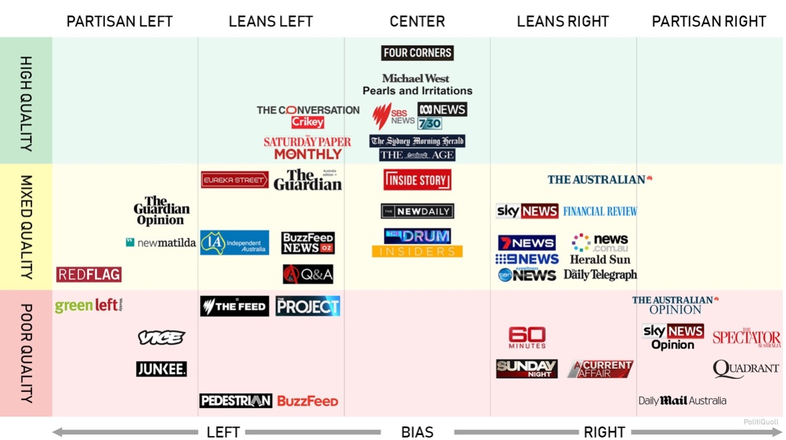

The Bubble Breaker
Developped by Aussie Otbox

"the news and the truth are not the same thing"
Walter Lippmann

Are you in a News Bubble?
It seems to be obvious that political biases among Australian media have been a undoubtable fact. Although partisanship is the constant theme in politics fight, Does that mean the war won't spread to elsewhere? And as news consumers, are we involved in without awareness?

Where is News Bubble?
It's not everywhere, but it can exist in somewhere unexpected.
Panic Buying
It was one of our terrible experiences during the Covid-19. While the media has been consistent in calling on people to buy rationally, they also seem happy to influence your political views with some interesting storytelling techniques.
Mr Andrews said he was determined to follow the best advice.
"I don't think any of us would be safer if politicians start making it up as they go," he said.
But within 60 minutes of Premier Dan Andrews making the announcement, toilet paper shelves were empty and checkout lines were snaking into the aisles.
The buying frenzy began almost immediately following Premier Dan Andrews' announcement stay-at-home measures would be enforced for metropolitan Melbourne and the Mitchell Shire.
You see, whether these challenges your opinion or not, these reports of panic buying in Victoria have been linked, wittingly or not, to Victorian Premier Daniel Andrews. In fact, due to the market force, media is profition in publishing information with loaded words to cater a certain audience group. And in the long term, the audience might be divided by polarized views and form news bubbles respectively.
News reports are not always fair, but there are ways to get closer to the truth.
1. Access news from Multisources
Listening to ideas that challenge your preconceptions may be the best way to keep yourself from falling into the comfort zone of the news bubble. So, We carefully selected 10 quality brands from Australian news media, designed to give you a different perspective and competitive point of views.
2. Sentiment analysis
Using sentiment analysis, we are able to determine the perspective of any particular news article. This allow us to recommend competing viewpoints and ensures that you can be confident that you are receiving all relevant information before forming your opinions.
We have made this process compelely transparent by listing each objectives with their associated sentiment score below these articles.
Dan Andrews’ incompetence has left Victoria in a state of distress as we enter our 10th week of Lockdown. Premier Andrews must be held toaccount for the irreversible damage he has caused.
Dan Andrews and the Victorian Labor Party has shown the benefit that social distancing and isolation has in getting our society back to normal. Under their leadership, there is no doubt we will be able to overcome this challenge.
Victorian Premier Daniel Andrews said the statewould enter a lockdown at 11.59pm on Friday until 11.59pm on Wednesday inresponse to the Holiday Inn quarantine outbreak.